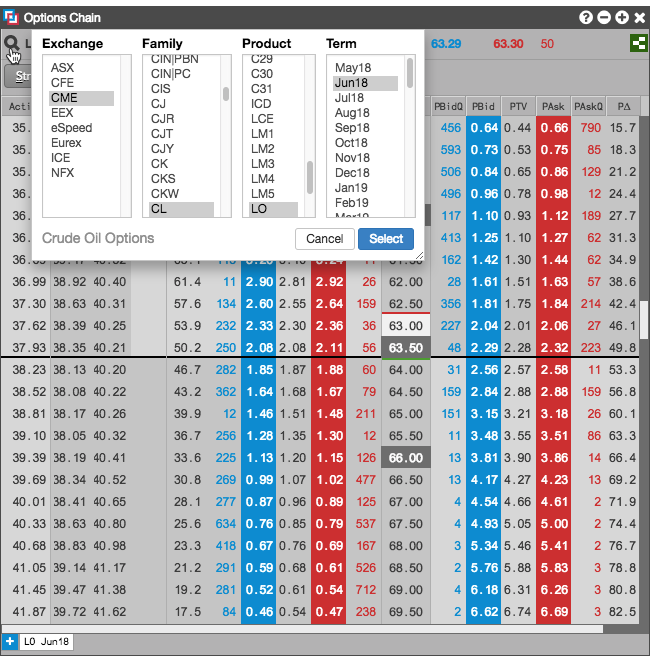

<div>
  
  <p>To select an options contract:</p>
  <ol>
    <li>
    	Click the  icon.
    </li>
    <li>
    	Browse for the desired contract and click <strong>Select</strong>.
    	<p></p>
    </li>
  </ol>
</div>